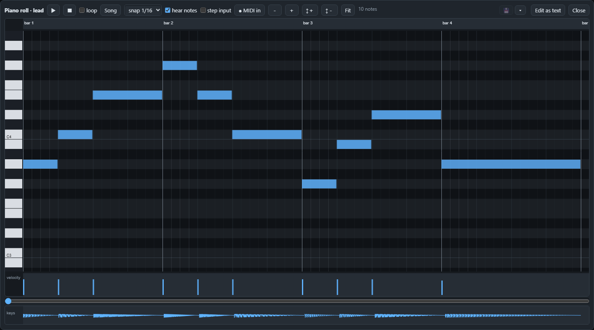
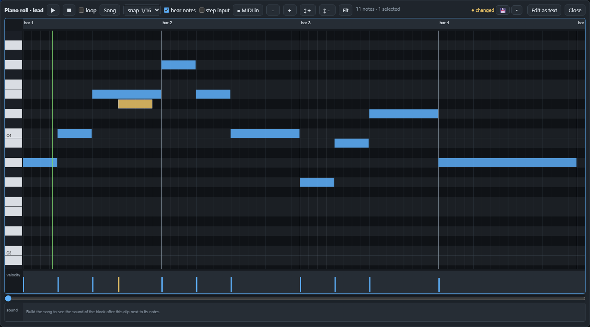

Page 12 of 22
The piano roll
Draw, move and listen to notes on a grid, and see the text change as you work.
The piano roll is the place to write a melody with the mouse. Select a midi-clip block and press AMPLE Jam: a window opens with a grid.

Reading the grid#
- Left to right is time, with the bar numbers on top. A note is a coloured bar: its left edge is where it starts and its length is how long it lasts.
- Bottom to top is pitch, like the keys of a piano on the left. C3 and C4 are marked so you can find your way.
- The small bars at the bottom, the velocity lane, show how hard each note is played. Taller is harder.
Drawing and changing notes#
- Draw a note: press on an empty spot and drag to the right for its length.
- Move it by dragging it, resize it by dragging its end, delete a selected note with Delete.
- Select several with a rectangle, or all with Ctrl+A. Copy, cut and paste work as always (Ctrl+C, Ctrl+X, Ctrl+V), and Ctrl+D makes a copy next to the selection.
- Snap (the drop-down at the top) decides to what the notes jump: 1/16 of a bar, 1/8 and so on. Turn it finer for loose timing.

Listening#
- ▶ plays from the playhead, initially the start of the clip (also the space bar). Click the ruler to set it; selecting or drawing a note does not move it. ▶ sel plays only the selected notes. Stop returns to the clip start.
- Notes you draw or move are auditioned through the connected instrument preview.
- Play the built song from here (in the ☰ menu) plays the built song starting from the left edge of the view.
- loop repeats the complete clip, and Fit shows all the notes. Drag a note's right edge across bar lines to make a longer sustain; its saved segments remain one visible note.
Recording and typing#
- MIDI in records from a MIDI keyboard when your browser allows it.
- The typing keyboard (the ⌨ button or Ctrl+T) lets you play notes on your computer keyboard: [ and ] change the octave.
More tools in the menu#
The ☰ menu of the window folds its tools into groups that open one at a time:
- On the selected notes: reverse in time, double or halve the speed, flip pitch, legato, staccato, remove overlaps, strum, a hi-hat roll chopper and humanize.
- Create: arpeggiate a chord, the riff machine, stamp a chord (with inversion, spread, drop 2 and a bass note) and hum a melody.
- Scale: choose a root and a scale (out-of-scale rows are dimmed), snap new notes to it, fit the selected notes to it or guess the key.
- Colour groups and properties: colour tabs on notes, show one group, set the MIDI channel of a group, and exact bar, beat, length, pitch, velocity, slide and portamento of the selected notes.
- Lanes and clips behind: the arrangement, the sound as built and the automation under the roll, the other clips behind this one as faint outlines, and a chord lock that snaps new notes to their chords.
The strip under the notes is a lane of its own: choose velocity, pan, fine pitch, release or cutoff, drag a bar to set a note's value and double-click to reset it.
The text is always the truth#
Every change you make in the roll is one edit of the clip's notes text, and Edit as text (in the ☰ menu) takes you to it. If a clip was written with chords, the roll offers to write the chords out as notes first; Undo brings the chords back.
Next: changing the sound with effects, in Effects.